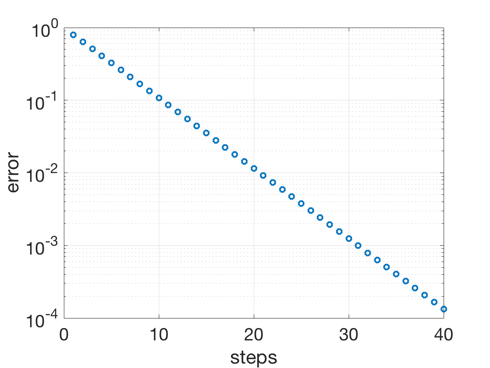

Additional Examples 2.5
1
Rearrange the equations \(-x+4y+z = 2, x-y+3z = 8, 2x-z = 4\) to be strictly diagonally dominant, and apply two steps of the Gauss-Seidel method with initial guess \( [0,0,0]\) to approximate the solution.
Solution. The equations are strictly diagonally dominant in the order
\begin{eqnarray*}
2x\phantom{xxxx} - z &=& 4\\
-x+4y+z &=& 2\\
x-y+3z &=& 8.
\end{eqnarray*}
Isolating the variables yields
\begin{eqnarray*}
x &=& \frac{4+z}{2}\\
y &=& \frac{2+x-z}{4}\\
z &=& \frac{8-x+y}{3}
\end{eqnarray*}
Substituting the initial guess \( x_0 = 0, y_0 = 0, z_0 = 0 \) results in
\begin{eqnarray*}
x_1 &=& \frac{4+z_0}{2} = \frac{4+0}{2} = 2\\
y_1 &=& \frac{2+x_1-z_0}{4} = 1\\
z_1 &=& \frac{8-x_1+y_1}{3} = 7/3
\end{eqnarray*}
and
\begin{eqnarray*}
x_2 &=& \frac{4+z_1}{2} = 19/6\\
y_2 &=& \frac{2+x_2-z_1}{4} = 17/24\\
z_2 &=& \frac{8-x_2+y_2}{3} = 133/72
\end{eqnarray*}
2
Adapt the sparsesetup.py and jacobi.py codes to apply the Jacobi method to the \(100\times 100\) tridiagonal system
\[
\left[\begin{array}{rrrrrrr}
5&-2\\
-2&5&-2\\
&-2&5&-2\\
&&\ddots&\ddots&\ddots\\
&&&\ddots&\ddots&\ddots\\
&&&&-2&5&-2\\
&&&&&-2&5
\end{array}\right]
\left[\begin{array}{c}
x_1\\x_2\\x_3\\\vdots\\\vdots\\x_{99}\\x_{100}
\end{array}\right]=
\left[\begin{array}{r}
3\\1\\1\\\vdots\\\vdots\\1\\ 3
\end{array}\right] .
\]
Plot the solution error as a function of the number of Jacobi iteration steps.
The code for defining the sparse matrix problem is:
import numpy as np
from scipy.sparse import diags
# Additional Example 2.5.2 Sparse matrix setup
# Input: n = size of system
# Outputs: sparse matrix a, r.h.s. b
def sparsesetup1(n):
e = np.ones((n,1))
a = diags([-2*e 5*e -2*e],[-1,0,1],shape=(n, n)).tocsc() # Entries of a
b = np.ones((n,1)) # Entries of r.h.s. b
b[0]=3
b[n-1]=3
return a,b
Then the commands
a, b = sparsesetup1(100)
for i in range(40):
x=jacobi(a,b,i)
err(i)=max(np.abs(x-1))
run the Jacobi iteration. The error as a function of iteration is shown in the plot below.
